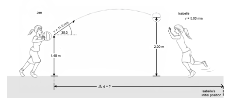

Question 18
During a basketball practice, Jen throws the
ball in the air with an initial velocity of 11.0 m/s, at an angle of 35.0°, and from a height of
1.40 m. At the same moment Isabelle begins running towards the ball with a
constant velocity of 5.00 m/s. Isabelle catches the ball on the way down
at a height of 2.00 m.

What is the distance
between the two players when the ball is thrown?